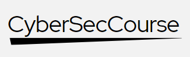

Grado Superior en Administración de Sistemas Informáticos en red (ASIX)
El 88% de nuestros alumnos continúa trabajando en su empresa de prácticas al finalizar el Grado.
Docencia Virtual

Tutor Personal
Clases Virtuales
Solicita Informació
Requisito de acceso
Grado Medio de Informatica
Prácticas
400h
Inicio del curso
20 de septiembre del 2025
Duración
2 años